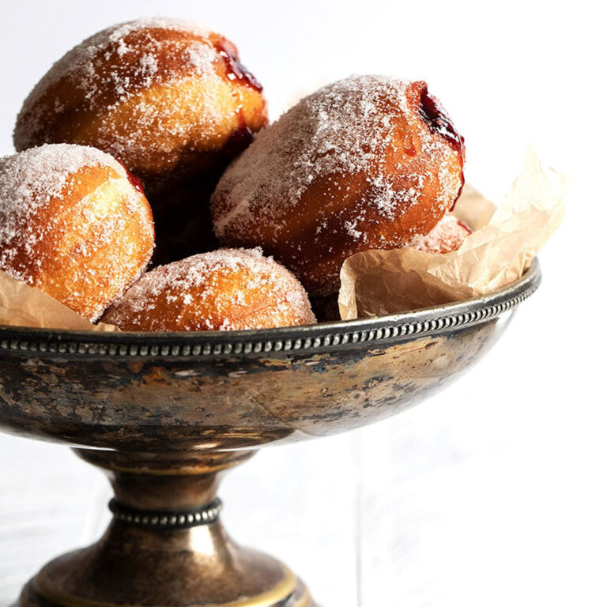

Pączki

Paczki are traditionally eaten on Fat Thursday or Fat Tuesday. Roll fried donuts in granulated sugar, icing sugar or dip into a thin icing sugar glaze. These can be filled with jam or custard. Makes 10-12 paczki donuts.
Ingredients
- 2 1/4 tsp (7 g) dry active or instant yeast,
- 3 – 3 1/2 cups (360 – 420 g) all-purpose flour,
- 1 cup (227 ml) whole milk,
- Jam or custard for filling,
- Oil,
- 2 large egg yolks,
- 1/4 cup (50 g) granulated white sugar,
- 2 Tbsp butter,
- 1/2 tsp vanilla,
- 1/2 tsp salt.
Steps
-
In a small saucepan, heat the milk until steaming with small bubbles forming around the edges (about 180F). Do not boil. Remove from heat and let cool to lukewarm (about 105F). *It's important to ensure the milk has cooled to lukewarm, of it may kill the yeast.
-
In a large bowl or the bowl of a stand mixer, dissolve the yeast in the lukewarm milk and let stand for 5 minutes. Add 1 cup of the flour. Mix together and let stand for 20-30 minutes, until really bubbly.
-
In the meantime, beat the yolks in a small bowl until they are light and fluffy.
-
To the yeast mixture, add the melted butter and sugar and mix. Add salt and vanilla. Add beaten egg yolks. Slowly add more of the flour to bowl in small increments, adding flour just until you have a soft, moist, but not sticky dough. Remove the dough to a lightly floured work surface and knead 1 minute (adding a bit more flour if it is sticking to your hands or the work surface). Form dough into a ball.
-
Grease a clean bowl and add the dough. Cover the bowl with plastic wrap and let rise in warm place until doubled in size. (This dough is a bit of a slow riser, so expect this rise to be up to 90 minutes).
-
Deflate dough and pat out onto a floured cutting board. With a rolling pin, gently roll into a 1/2-inch thick circle. Gently cut out circles with 3-inch biscuit cutter. Place onto a parchment lined baking sheet, cover with a clean tea towel and let rise until doubled (about 30 minutes). *You can re-roll the scraps and cut more pieces, though they are never quite as neat as the first cuts. I like to use the ugliest of these ones as "test" ones, to test the temperature of the oil. I fry one, let cool, then cut it open to make sure it is cooking all the way through. I can then adjust time/temperature, as needed from there.
-
Meanwhile, heat oil to 360°F. in a deep fryer or in a large, heavy pot. Fry the Paczki until golden on one side, flip and fry the other side. *Tip! chopsticks are great for flipping the Paczki! Don't try to cook too many at a time, so you don't reduce the temperature of the oil by adding too many at once. Don't rush the frying, to ensure that they are cooked all the way through well. Fry until they are a deep golden colour. Remove paczki to a cooling rack for about 30 seconds, then immediately roll in granulated sugar. Let stand until completely cooled.
-
Once cooled, using a sharp knife, poke a hole on the side. Use a pastry bag with a large plain tip to pipe the jam or custard filling inside.
-
Paczki are best enjoyed when freshly made, but you can freeze any extras up to 3 months.